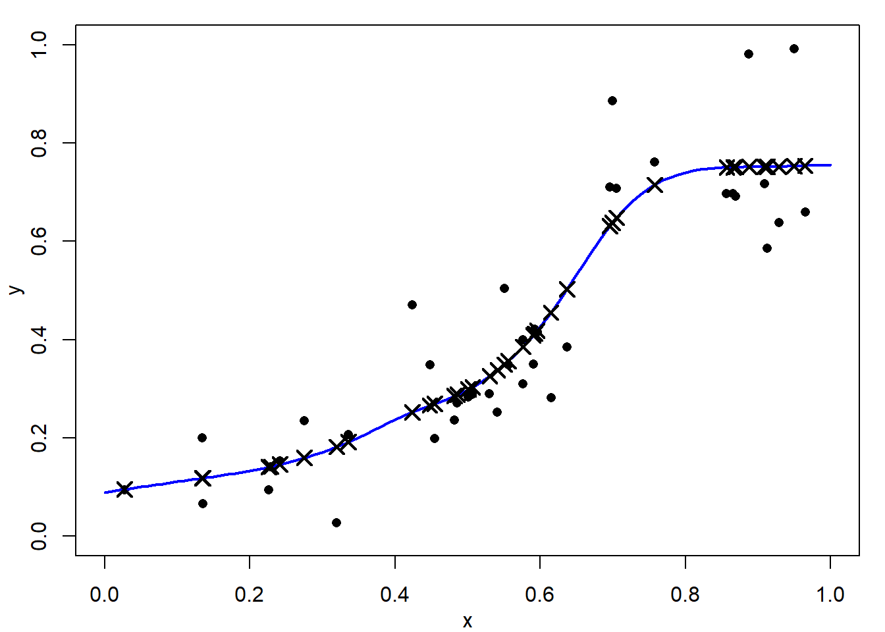
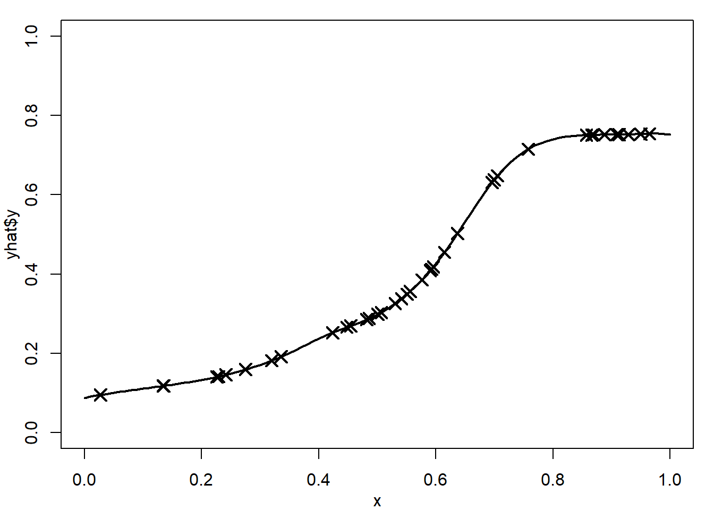

4 Smoothing Splines
\[ \def\b#1{\mathbf{#1}} \]
4.1 Overview
In Section 1.2 we described a general statistical model with a response variable \(y\) and an explanatory variable \(x\). We observe \(y_i\) at each location \(t_i,\) for \(i=1,\ldots, n\). We imagined that the \(y\)’s are noisy versions of a smooth function of \(t\), say \(f(\cdot)\) where the errors follow a normal distribution with constant variance. That is \[
y_i = f(t_i) + \epsilon_i, \quad
\epsilon_i \sim \mathrm{N}(0,\sigma^2),
\] for \(i=1,\ldots,n\), where \(f\) is smooth, the \(\epsilon_i\) are i.i.d., and \(f\) and \(\sigma^2\) are unknown.
The log-likelihood for this situation is: \[
l(f; \mathbf{y})
= -\frac{1}{2\sigma^2} \sum_{i=1}^n \left(y_i - f(t_i)\right)^2 - n \log \sigma
\tag{4.1}\] and we wish to estimate \(f\) for a given data set \(\mathbf{y}=\{y_1,\dots, y_n\}\). With no constraints on \(f\), the log-likelihood would be maximized by setting \(f(t_i)=y_i\) for all \(i\), and we would estimate the noise variance as \(\hat{\sigma}^2=0\). This takes no account of randomness in the data and \(f\) would in general need to be quite wiggly to achieve this fit.
Figure 4.1 (a) shows such an interpolation of noisy data. This would be of little use for explanation, interpolation or prediction.

We do not expect, or even want, the fitted function \(f\) to pass exactly through the data points \(\{(t_i,y_i)\}\), but merely to lie close to them. We would rather trade-off goodness-of-fit against smoothness of \(f\). Figure 4.1 (b) shows a smoothing spline fit to the same data. This is much better as there is a clear explanation of the relationship, it could be used reasonably well for interpolation and prediction.
4.2 The penalized least-squares criterion
Noting that maximizing Equation 4.1 is equivalent to minimizing the residual sum of squares: \(\sum_{i=1}^n \left(y_i - f(t_i)\right)^2\), we can achieve this trade-off by minimizing a penalized sum of squared residuals: \[ R_\nu(f,\lambda) = \sum_{i=1}^n \left(y_i - f(t_i)\right)^2 + \lambda J_\nu(f), \tag{4.2}\] where \(J_\nu(f)\), as first defined in Equation 3.8, penalizes the roughness of \(f\). The smoothing parameter \(\lambda\geq 0\) controls the severity of this penalty. For now we will assume \(\lambda\), which absorbs the \(\sigma^2\) in Equation 4.1, is known.
Figure 4.2 shows example smoothing spline fits using a range of smoothing parameters, \(\lambda\). In Figure 4.2 (a) the fit is essentially a straight line, perhaps Figure 4.2 (b) and Figure 4.2 (c) show acceptable fits. Figure 4.2 (d), with a very small \(\lambda\) value is close to an interpolating spline fit and is clearly unacceptable.

As the smoothing parameter \(\lambda\) increases, the optimal \(f\) becomes smoother. In particular, it can be shown that as \(\lambda \rightarrow \infty\), the vector of coefficients \({\mathbf b} \rightarrow {\mathbf 0}\), and \({\mathbf a}\) tends to the OLS estimate of the regression parameters. Thus, the smoothing spline converges to the sample mean \(f(t)=\bar y\) when \(\nu=1\), and to the ordinary least squares fitted line, \(f(t)=\hat\alpha+\hat\beta t\), when \(\nu=2\). In the other direction, as \(\lambda \rightarrow 0\) the smoothing solution converges to the interpolating spline.
4.3 Relation to interpolating splines
We show in the following proposition that the function \(f\) which minimizes Equation 4.2 is the interpolating spline of its fitted values.
Proposition 4.1 Suppose \(\hat{f}\) minimizes \(R_\nu(f,\lambda)\) and let \(\hat{y}_i = \hat{f}(t_i), i=1,\dots,n\) denote the corresponding fitted values. Then, \(\hat{f}\) solves the interpolation problem for the artificial data set \((t_i,\hat{y}_i), i=1,\dots , n\). That is, \(\hat{f}\) minimizes \(J_\nu(f)\) over functions \(f\) satisfying \(\hat f(t_i)=\hat{y}_i\), \(i=1,\ldots,n\). Consequently, \(\hat{f}\) is a \(p^{\text{th}}\)-order natural spline, where \(p=2\nu-1\). This means that, when solving the smoothing problem, we only need consider spline functions given by the representations in Proposition 3.1.


Proof: Suppose the assertion is not true. In this case, we must be able to find a function \({\hat{f}^\star}\), say, which also interpolates the artificial data \((t_i,\hat{y}_i), i=1,\dots ,n\), but which has a smaller roughness penalty. That is \[ J_\nu({\hat{f}^\star}) < J_\nu(\hat{f}) \mbox{ with } \hat{f}^\star(t_i) = \hat{y}_i, \ i=1,\ldots,n. \] Note that the fitted values from the function \(\hat f^\star\) are also equal to \(\hat y_i, i=1,\dots,n\) as it interpolates the same artificial data as \(\hat f\).
Now, from Equation 4.2, \[\begin{align*} R_\nu(\hat{f}^\star, \lambda) &= \sum_i (y_i-\hat{y}_i)^2 + \lambda J_\nu(\hat{f}^\star)\\ &< \sum_i (y_i-\hat{y}_i)^2 + \lambda J_\nu(\hat{f}) = R_\nu(\hat{f}, \lambda). \end{align*}\] Hence \(R_\nu(\hat{f}^\star, \lambda) < R_\nu(\hat{f}, \lambda)\). But, by construction \(\hat{f}\) minimizes \(R_\nu(f, \lambda)\), which is a contradiction. Hence, it must not be possible to find a function \({\hat{f}^\star}\) which also interpolates the artificial data but which has a smaller roughness penalty.
We have shown that \(\hat{f}\) is the optimal interpolant of the fitted values \(\hat{y}_i,\ i=1,\dots,n,\) so it follows from Proposition 4.1 that \(\hat{f}\) is a natural spline of order \(p=2\nu-1\).
4.4 The smoothing problem in matrix notation
We have just proved that the function \(\hat{f}\) that minimises \(R_\nu (f, \lambda)\) must be a natural spline (linear if \(\nu=1\), cubic if \(\nu=2\)) with knots at \(\{t_i,\,i=1,\ldots,n\}.\) That is, as in Proposition 3.1, we can write:
\[ \hat{f}(t) = \sum_{i=1}^n b_i\left|t-t_i\right|^p + \begin{cases} a_0, &\nu=1\\ a_o + a_1t, &\nu=2, \end{cases} \tag{4.3}\] where \(p=2\nu-1\) and constraints \[ \sum_i b_i = 0 \, \mbox{ for }\, \nu=1 \quad \sum_i b_i = \sum_i b_i \, t_i = 0 \, \mbox{ for }\, \nu=2. \tag{4.4}\]
However, we have not yet figured out how to calculate the parameter values \(\hat{a}_0,\dots,\hat{a}_{\nu-1},\ \hat{b}_1,\dots,\hat{b}_n\) in Equation 4.3 which optimally fit the data \(y_1,\dots,y_n\). For this, it is convenient to re-express the penalized sum of squared residuals Equation 4.2 in matrix notation.
Proposition 4.2 The roughness of a natural linear spline (\(\nu=1\), i.e. \(p=1\)) is \[ J_1(f) = -2\sum_{i=1}^n \sum_{k=1}^n b_i b_k \left| t_i - t_k \right| = c_1\,{\mathbf b}^T \, K_1 \, {\mathbf b}, \tag{4.5}\] and the roughness of a natural cubic spline (\(\nu=2\), i.e. \(p=3\)) is \[ J_2(f) = 12\sum_{i=1}^n \sum_{k=1}^n b_i b_k \left| t_i - t_k \right|^3 = c_2\,{\mathbf b}^T \, K_2 \, {\mathbf b}, \tag{4.6}\] where the constants are given by \[ c_1=-2, \quad c_2=12. \tag{4.7}\] Here \({\mathbf b}=(b_1,\ldots,b_n)^{T}\) is the vector of spline coefficients and \(K_\nu\) is the \(n\times n\) matrix whose \((i,k)\)th element is \(\left| t_i - t_k \right|^p\), where \(p=2\nu-1\) that is \[ K_\nu = \begin{bmatrix} |t_1-t_1|^p & |t_1-t_2|^p & \dots & |t_1-t_n|^p \\ |t_2-t_1|^p & |t_2-t_2|^p & \dots & |t_2-t_n|^p \\ \vdots & \vdots &\ddots & \vdots \\ |t_n-t_1|^p & |t_n-t_2|^p & \dots & |t_n-t_n|^p. \end{bmatrix} \]
Proof: To be covered later if there is sufficient time.
From Proposition 4.2 the roughness penalty satisfies: \[\begin{align} J_\nu (\hat{f}) = c_\nu \, {\mathbf b}^T K_\nu {\mathbf b} \label{eq:Jnufhat} \end{align}\] where \(c_1=-2\); \(c_2= 12\); \({\mathbf b}=(b_1,\ldots,b_n)^T\); and \(K_\nu\) is the \(n \times n\) matrix whose \((i,k)\)th element is \(\left|t_i-t_k\right|^p\).
From Equation 4.3, the value of \(\hat{f}\) at knot \(t_k\) is \[ \hat{f}(t_k) = \sum_{i=1}^n b_i\left|t_k-t_i\right|^p + \begin{cases}a_0, &\nu=1\\ a_0 + a_1t_k, &\nu=2 \end{cases}. \tag{4.8}\]
In matrix form, this is \[ \mathbf{\hat{f}} = \left[ \begin{array}{c}\hat{f}(t_1) \\ \vdots \\ \hat{f}(t_n)\end{array} \right] = K_\nu {\mathbf b} + L_\nu \mathbf{a}_{\,\nu} \tag{4.9}\] where \[ L_1 = \left[ \begin{array}{c} 1\\ \vdots \\ 1\end{array}\right], \quad \mathbf{a}_1 = a_0, \quad \quad \mbox{and} \quad \quad L_2 = \left[ \begin{array}{cc} 1 & t_1 \\ \vdots & \vdots \\ 1 & t_n \end{array} \right], \quad \mathbf{a}_2 = \left[\begin{array}{l}a_0\\a_1\end{array} \right] . \]
Thus, from Equation 4.4 – Equation 4.9, the penalized least-squares criterion Equation 4.2 reduces to a quadratic function of the parameters \(\mathbf{a}\) and \({\mathbf b}\):
\[ R_\nu(f, \lambda) = (\mathbf{y} - K_\nu \, {\mathbf b} - L_\nu \, \mathbf{a})^T (\mathbf{y} - K_\nu \, {\mathbf b} - L_\nu \, \mathbf{a}) + \lambda \,c_\nu \,{\mathbf b}^T K_\nu \,{\mathbf b} \tag{4.10}\] subject to \[ L_\nu^T\,{\mathbf b} = 0, \tag{4.11}\] where \(\mathbf{y} = (y_1,\ldots,y_n)^T\).
To find the explicit values for \(\mathbf{b}\) and \(\mathbf{a}\), we must minimize the quadratic function Equation 4.10 subject to the linear constraints Equation 4.11.
Proposition 4.3 The solution to the smoothing spline problem is given by \[ \begin{bmatrix} \hat{\mathbf a} \\ \hat{\mathbf b} \end{bmatrix} = \begin{bmatrix} 0 & L_\nu \\ L_\nu^T & K_\nu+\lambda^* I_n \end{bmatrix}^{-1} \begin{bmatrix} {\mathbf 0} \\ {\mathbf y} \end{bmatrix} \tag{4.12}\] and \(\lambda^* = c_\nu \lambda\).
Proof: Omitted.
4.5 Smoothing splines in R
Notes to be added
4.6 Exercies
Questions will be added later